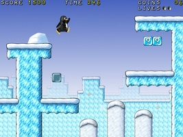

PDF version
Education
- 2016–2021(june?), PhD in Computer Science [waiting for defense]
co-joint degree between the University of Porto, Minho and Aveiro
The PhD thesis was on machine learning -- more specifically computer vision (Rethinking a Deep Learning Pipeline for Images). The major highlights from the thesis:
- Background invariant training applied to electrical insulator detection
Deep learning methods are vulnerable to changes in the background, even if they do not affect the object of interest. We show that adversarial training (similar to GANs) can be used to greatly ameliorate this problem. The method was applied to electrical insulator detection, in collaboration with a team from Brazil.
- Improving accuracy under class imbalance conditions using ranking
Sometimes not all groups are well-represented in the data: consider patients with differing disease severity, or fraud and fault detection where the anomaly is rare, or racial under-representation. We have borrowed concepts from the ranking literature to improve the classification accuracy of these under-represented cases.
- Iterative inference
Deep learning predictions are typically produced as a single-shot during the forward-pass. The proposed method allows for predictions to take place during the backward-pass and be, therefore, iterative. This allows incremental improvements of the decisions, including those generated by third-party machine learning models.
- 2013–2015, MSc in Mathematical Engineering [graduated with honors; 18/20]
Faculty of Sciences, University of Porto
The master's focuses on data: - from machine learning to statistics
- optimization and mathematical modeling.
My thesis consisted of a critical review on a wide range of families of models (differential equations, stochastic simulations, cellular automata, etc) applied to epidemiology, more specifically HIV-1 immune response. The thesis work was funded by a grant from the Mathematics Center of the University of Porto (CMUP).
- 2009–2012, BSc in Computer Science [graduated with honors; 16/20]
Faculty of Sciences, University of Porto
Curriculum: - Practical programming foundations: C, Java, design patterns, web development, SQL, etc
- Theoretical computer science: data structures, automata theory, lambda calculus.

- Apoo, a virtual machine
During my bachelor's, I helped with the development of Apoo (together with Profs Rogério Reis and Nelma Moreira), a virtual machine that is currently being used to teach Assembly. Apoo is written in Python and GTK+.
Skills
- Machine learning: Weka, Scikit-Learn, PyTorch, TensorFlow
- Computer vision: OpenCV, MATLAB
- Programming: Python, C/C++, Java, R, VBA, HTML/Javascript
- Databases: Postgres, Mongo, MySQL
- Web development: Flask
Career

- 2015-2021, Researcher @ INESC TEC
Published over ten papers (see below) on machine learning and computer vision.
- 2021 march, Award: Nominated researcher extraordinaire @ INESC TEC
https://bip.inesctec.pt/en/especiaisdecorrida/ricardo-cruz-ctm-2/
- 2020, Award: Best Oral Presentation at conference RECPAD 2020
- 2018 september, Award: Nominated for researcher limelight @ INESC TEC
http://bip-archive.inesctec.pt/en/196/fora-de-serie.html
- 2014, Researcher @ the Mathematics Center of the University of Porto
Research on epidemiological models: from differential equations to stochastic simulations and cellular automata.
- 2006 and 2007, Google Grant: Summer of Code program
This program from Google funds open-source contributions. I have participated in two editions, both with Novell to improve SUSE (YaST) and LibreOffice.
- YaST GTK+ port
I have worked with Michael Meeks from Novell to develop the GTK+ module for YaST, which is a configuration tool written in C++.
- LibreOffice dynamic layouts
I have worked with Michael Meeks from Novell to add dynamic geometry layouts to LibreOffice (at the time, OpenOffice.org) -- this is an office suite written in C++.
- Freelance and startup
I have participated in a startup whose goal was to develop a search engine to find low-cost travel destinations (NLP work) and I have done regular consulting work, especially for a geography group.
Open Source and Competitions
- Avito NLP competition @ Kaggle
Machine learning competition involving text (NLP). Received bronze award for results and silver award for engagement.
- EatFeed
RSS/Atom reader written in C++ and GTK+. https://github.com/rpmcruz/eatfeed
- J2ME and Android games
A couple of games written in Java for Android and older mobile phones.

- SuperTux, co-author
As a kid, I was one of the initial team authors who came together in an internet forum and organized the development of this game. It is written in C++, SDL, and OpenGL. https://www.supertux.org/
Publications
These are papers in international conferences and journals. The PhD consisted of "re-thinking" several aspects of the deep learning/computer vision pipeline; they range from active learning to ordinal classification, adversarial learning, hyperparameter search, and class imbalance.
CAPES Qualis rank: https://ppgcc.github.io/discentesPPGCC/pt-BR/qualis/
- 2021, Active Supervision: Human in the Loop [submitted]
R. Cruz, ASM Shihavuddin, J. Cardoso. ICANN [CAPES: B1]
- 2021, Ordinal Losses for Classification of Cervical Cancer Risk
T. Albuquerque, R. Cruz, J. Cardoso. PeerJ Computer Science [IF: 3.09]
- 2021, Background Invariance by Adversarial Learning [accepted]
R. Cruz, R. Prates, E. Filho, J. Costa, J. Cardoso. 25th International Conference on Pattern Recognition (ICPR), IEEE [CAPES: A2]
- 2019, Automatic Augmentation by Hill Climbing
R. Cruz, J. Costa, J. Cardoso. 28th International Conference on Artificial Neural Networks (ICANN), Springer [CAPES: B1]
- 2019, Averse Deep Semantic Segmentation
R. Cruz, J. Costa, J. Cardoso. 41st Engineering in Medicine and Biology Conference (EMBC), IEEE [CAPES: A2]
- 2019, Insulator visual non-conformity detection in overhead power distribution lines using deep learning
R. Prates, R. Cruz, A. Marotta, R. Ramos, E. Filho, J. Cardoso. Journal Computers & Electrical Engineering, Springer [IF: 2.66]
- 2018, A Class Imbalance Ordinal Method for Alzheimer’s Disease Classification
R. Cruz, M. Silveira, J. Cardoso. 2018 International Workshop on Pattern Recognition in Neuroimaging (PRNI), IEEE
- 2018, Binary ranking for ordinal class imbalance
R. Cruz, K. Fernandes, J. Costa, M. Pérez Ortiz, J. Cardoso. Journal Pattern Analysis and Applications, Springer [IF: 1.51]
- 2018, Deep image segmentation by quality inference
K. Fernandes, R. Cruz, J. Cardoso. International Joint Conference on Neural Networks (IJCNN), IEEE [CAPES: A2]
- 2017, Constraining type II error: building intentionally biased classifiers
R. Cruz, K. Fernandes, J. Costa, J. Cardoso. International Work-conference on Artificial Neural Networks (IWANN), Springer [CAPES: B1]
- 2017, Fine-to-coarse ranking in ordinal and imbalanced domains: an application to liver transplantation
M. Pérez-Ortiz, K. Fernandes, R. Cruz, J. Cardoso. International Work-conference on Artificial Neural Networks (IWANN), Springer [CAPES: B1]
- 2017, Combining ranking with traditional methods for ordinal class imbalance
R. Cruz, K. Fernandes, J. Costa, M. Pérez-Ortiz, J. Cardoso. International Work-conference on Artificial Neural Networks (IWANN), Springer [CAPES: B1]
- 2017, Ordinal class imbalance with ranking
R. Cruz, K. Fernandes, J. Costa, M. Pérez-Ortiz, J. Cardoso. Iberian conference on pattern recognition and image analysis (Ibpria), Springer [CAPES: B2]
- 2016, Tackling class imbalance with ranking
R. Cruz, K. Fernandes, J. Costa, J. Cardoso. International Joint Conference on Neural Networks (IJCNN), IEEE [CAPES: A2]